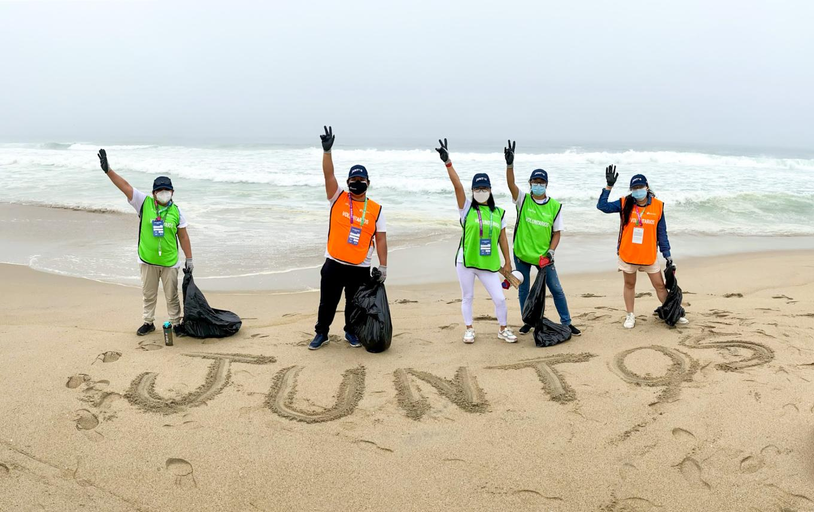
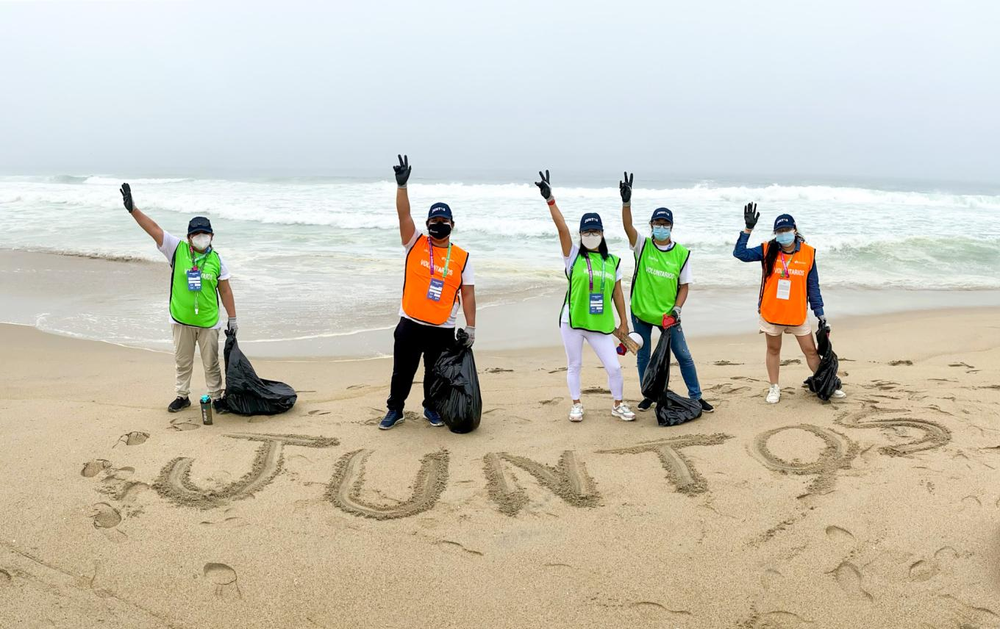

Jornada de Reforestación
Bosque La Tigra
Únete a nuestra jornada de reforestación en el Parque Nacional La Tigra. Plantaremos más de 500 árboles nativos para restaurar zonas afectadas por la deforestación. ¡Tu ayuda es vital para conservar nuestros bosques!